{{ temaTitulo }}
{{ temaIntro }}
Materiales disponibles
{{ temaIntro }}
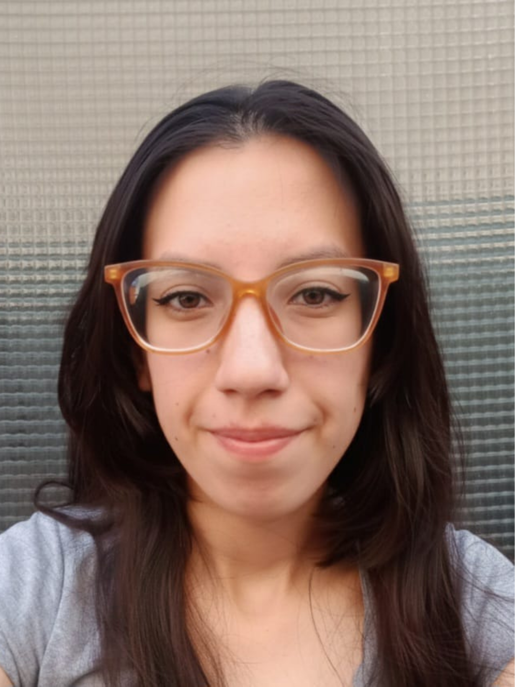
Sigo siendo una persona curiosa, pero que ahora tiene más iniciativa para ver y preguntar, y sin tanto miedo de hablarle a la gente
Alina soñaba con estudiar el profesorado en Letras, pero antes tenía que resolver algo más urgente: "necesitaba encontrar un trabajo de medio tiempo. Algo que sea compatible con estudiar una carrera, pero que me permitiera tener un ingreso". Un día se enteró que empezaba un ciclo de cursos en la Fundación Reciduca. "Me llamó la atención esto de que era como una formación y que te ayudaba con la búsqueda de empleo". Se anotó casi sin pensarlo.
Empezó con un curso de marketing, al que luego se sumó uno de atención al cliente con visitas a grandes empresas que le mostraron distintos recorridos profesionales posibles. En paralelo, participó de talleres de comunicación, autoconocimiento e inteligencia emocional. “Para mí era algo nuevo. Pensé que era más como algo que se hacía únicamente con un psicólogo”
Alina plantea que lo que aprendió de autorregulación emocional y la confianza fue clave y hoy las reconoce como habilidades necesarias para trabajar. “A mí lo que me da más miedo es como que hacer tal cosa y que pase un desastre. Pero es como que por ahí, si te lo pones a pensar, es como que no es no es probable que pase ese desastre. Y por ahí no sea tan desastre como pensás que es. Y además, si pasa, es como que puedes planificar una solución o una salida. Ese miedo se traducía en inacción... ¿y si pasa esto y esto? Bueno, no, mejor no lo hago”. También se recuerda como una persona muy curiosa que le daba miedo preguntar. “Antes de hacer los cursos de Reciduca, como que no se me cruzaba por la cabeza preguntar, sino que me quedaba con la duda, y después quizás se buscaba en Google o me fijaba a ver qué forma tenía para ver si podía encontrar respuesta”.
Esa curiosidad encontró su momento decisivo en una clase donde le preguntaron qué le gustaría hacer si pudiera elegir cualquier cosa. Respondió, sin pensarlo demasiado, que le gustaría enseñar ajedrez. "Me acuerdo que yo dije que lo que a mí me gustaría hacer sería ir y enseñar a jugar ajedrez. Y ya después de la clase, la profe se acercó, me preguntó cosas más específicas. Fue un momento clave en mi vida y en mi carrera también," dice.
La conversación la incentivó a preguntarle al profesor de ajedrez de centro barrial si había horas disponibles para dar clase. Consiguió su primer trabajo como docente de ajedrez para niños de 3 a 11 años, donde aprendió a planificar actividades, a tolerar la frustración cuando un grupo se aburría y a rearmar la clase sobre la marcha. Después de esa oportunidad, Alina reflexiona "sigo siendo una persona curiosa, pero que ahora tiene más iniciativa para ver y preguntar, y sin tanto miedo de hablarle a la gente," dice hoy.
Hoy Alina está cumpliendo su meta de estudiar el Profesorado en Letras en la universidad. En paralelo, trabaja en un call center que consiguió a través del portal de empleo de Reciduca. Ese ingreso ayuda a sostener la casa en la que vive con su mamá y sus hermanas. "Si antes me hubieran dicho que iba a terminar trabajando en un call center, yo hubiera dicho: no, imposible, si yo no hablo con la gente" dice.
Alina reflexiona sobre su recorrido: "me siento orgullosa de poder haber conseguido un trabajo de medio tiempo y poder estar estudiando en la universidad al mismo tiempo. Y creo que en haber mejorado mis habilidades de comunicación y animarme a preguntar”. Y cuenta que su meta ahora es alcanzar su título y ganarse la vida dando clases.
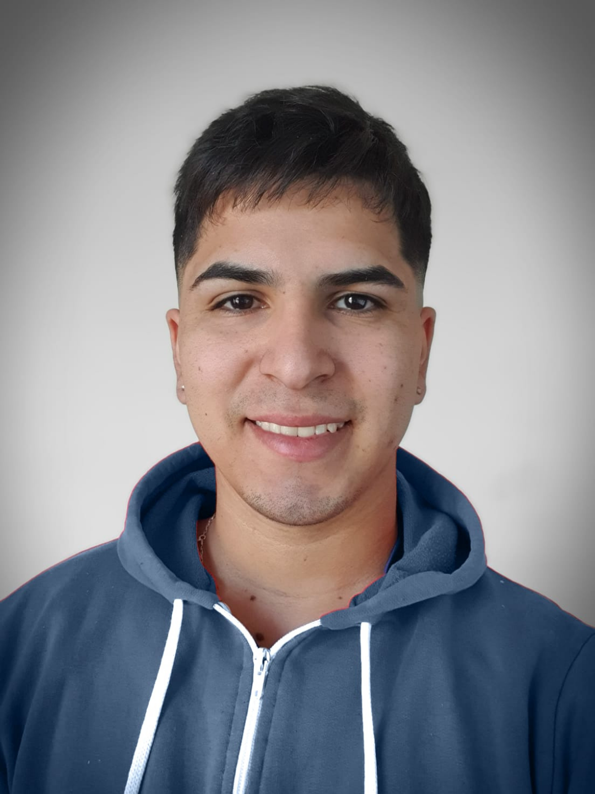
Fue como pasar de un karting a hacer un auto de verdad
Kevin terminó el colegio en plena pandemia de COVID sin tener muy claro cómo seguir. Su vida era una sucesión de trabajos temporales —en logística, atención al cliente y distintas changas—, pero sin una dirección definida. "Estaba medio en el limbo, no sabía muy bien qué quería hacer, tampoco sabía qué salida laboral tenía esa carrera", recuerda.
Un amigo de la primaria le habló de un curso de programación en Fundación Formar. Kevin se inscribió y comenzó el precurso de Academia FORIT, donde aprendió las bases del desarrollo web full stack junto con habilidades para el trabajo y la vida. Al finalizar, fue una de las tres personas seleccionadas de su cohorte para incorporarse a FORIT, la fábrica de software de la Fundación Formar. "Me puse recontento, fue como un alivio. Bueno, ahora por lo menos tengo por dónde seguir."
En FORIT comenzó a participar en proyectos reales para clientes, trabajando en equipo y recibiendo mentorías individuales. "Fue como pasar de un karting a hacer un auto de verdad", dice. Aunque el desafío técnico le resultó natural, pronto descubrió que el mayor aprendizaje iba por otro lado. "Yo era muy callado, muy tímido, muy cerrado en general. Ahí me vi obligado a cambiar eso, y de cierto modo me gustó, porque sabía que era lo que iba a necesitar si quería destacarme profesionalmente."
Ese proceso tomó un rumbo inesperado cuando comenzó a reunirse semanalmente con una mentora de Formar. Durante una de esas conversaciones, ella le hizo una pregunta que nunca antes se había planteado en serio: "Me preguntó cómo me veía ahí a 5 años". Esa conversación marcó un antes y un después. "No tenía metas como tal, simplemente iba fluyendo y me metía. Las metas no estaban de antes, sino que fue después de pasar por Formar."
Para Kevin, ese fue el verdadero cambio. Más allá de aprender programación, empezó a imaginar una carrera y a construir un proyecto de vida. "Por más bueno que hubiese sido en programación, no me hubiesen tomado en ningún trabajo. Creo que nadie quiere a alguien que se cierra solo o que no comunica los problemas que tiene." Los talleres de habilidades blandas y el acompañamiento constante le dieron herramientas para comunicarse, trabajar en equipo y ganar confianza. Con el tiempo, se convirtió en el integrante con más trayectoria en la oficina y comenzó a liderar el onboarding de los nuevos compañeros, una experiencia que descubrió que disfrutaba especialmente.
La transformación también llegó a su vida personal. Kevin cuenta que ahora puede participar con naturalidad de una reunión familiar sin aislarse, algo que antes le resultaba muy difícil. "Conseguir el trabajo fue un logro, pero creo que más que nada lo es haber desarrollado estas habilidades blandas, porque me afectaba en lo laboral, pero también en lo social. Toda la vida fui muy callado, muy reservado."
Hace unos meses consiguió trabajo en Nomulabs, una empresa española, gracias a la recomendación de una de sus líderes técnicas en Formar cuando surgió una vacante para ampliar el equipo. Hoy trabaja desarrollando una aplicación para buceadores. "Me siento como realizado, aunque recién empecé a trabajar. Puedo dedicarme a esto que me gusta."
Ahora sí tiene metas claras: quiere seguir creciendo profesionalmente, avanzar en seniority y, algún día, liderar un equipo. Sobre todo, quiere acompañar a otros jóvenes en ese mismo camino, del mismo modo en que él fue acompañado. Porque, antes de pasar por Formar, simplemente iba encontrando oportunidades sobre la marcha. Hoy, en cambio, sabe hacia dónde quiere ir y está construyendo, paso a paso, el proyecto de vida que alguna vez ni siquiera imaginó.
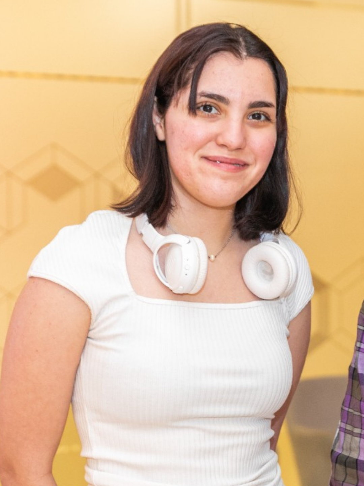
Es muy fácil perderse si no existe una red de contención y guía
Jimena tenía 15 años cuando su mamá la anotó, junto con su hermana, en un curso de programación. "Si les gusta o no les gusta después lo ven ahí, pero vayan y conozcan algo nuevo", les dijo. Ella no se imaginaba en ese mundo. "No me creía buena en matemáticas, ni en nada que tenga que ver con el mundo de la programación, porque no sabía que era para mí", recuerda. Hasta entonces, pensaba que estudiaría letras, filosofía o psicología.
Todo cambió el día en que programó un pequeño robot y lo vio moverse por primera vez. "El momento en que programando compilé los bloques y vi cómo un robotito hacía su camino a partir de algo que estábamos programando con la compu, a mí me voló la cabeza. Yo me enamoré de esa magia", dice. Desde ese momento empezó a hacerse preguntas sobre cómo funcionaban las cosas. "Creo que la vida en general son preguntas, y una siempre es curiosa. A mí me parece que la curiosidad nos guía."
Esa curiosidad la llevó a Chicas en Tecnología (CET), donde participó en distintos programas de formación. Pero el mayor descubrimiento no fue solamente la programación. Allí encontró una comunidad que la acompañó en una etapa decisiva de su vida, le mostró nuevas posibilidades y le permitió conocer, por primera vez, a mujeres ocupando posiciones de liderazgo en empresas tecnológicas. "Fue una segunda revelación que la programación, las ideas y la comunidad pueden cambiar el mundo."
Ese acompañamiento fue clave cuando llegó el momento de decidir qué estudiar. "A los 17 o 18, en ese momento donde tenés que elegir qué estudiar, fue difícil. A mí me gustaban muchas cosas y quería agarrar una carrera que tenga la mayor cantidad de cosas para aprender. Había descubierto que sí me gustaba la programación y la matemática." Así decidió estudiar Ciencia de Datos en la Universidad de Buenos Aires.
Hoy trabaja en Pan American Energy, donde analiza datos y procesos para distintas áreas de la empresa. Allí comprobó que una carrera tecnológica implica mucho más que programar. "Quizás una piensa que estudiando carreras técnicas tiene que caer en programar las 24 horas. Metés un montón de programación porque tenés una cabeza súper estructurada, pero, al mismo tiempo, es un trabajo muy de estar hablando constantemente con las personas y estar evaluando sus necesidades."
Como muchas mujeres en tecnología, todavía convive con el síndrome del impostor. "Nunca me termino de sentir suficiente para el lugar en el que estoy, y eso va bastante de la mano con ser mujer, y con estar todo el tiempo con varones que te lo hacen sentir", admite.
Mirando hacia atrás, entiende que ninguna de esas decisiones las tomó sola. "Es muy fácil perderse si no existe una red de contención y guía." Por eso hoy volvió a CET como embajadora para acompañar a otras jóvenes que recién empiezan su recorrido. "Siento que es una responsabilidad devolver de alguna forma lo que me dieron y replicarlo, seguir fomentando estos espacios."
Desde 2022, Chicas en Tecnología forma parte de la red de organizaciones aliadas de EMpower en Argentina. A través de una alianza de largo plazo, la organización recibe apoyo flexible para desarrollar e implementar su programa de empleabilidad para mujeres jóvenes, así como asistencia técnica para fortalecer sus capacidades institucionales. Este acompañamiento refleja el enfoque de EMpower: identificar organizaciones con un enorme potencial de impacto cuando todavía son pequeñas y tienen un acceso limitado a grandes fuentes de financiamiento, e invertir tanto en sus programas como en su fortalecimiento institucional para ayudarlas a crecer, consolidarse y ampliar las oportunidades que generan para las personas jóvenes.
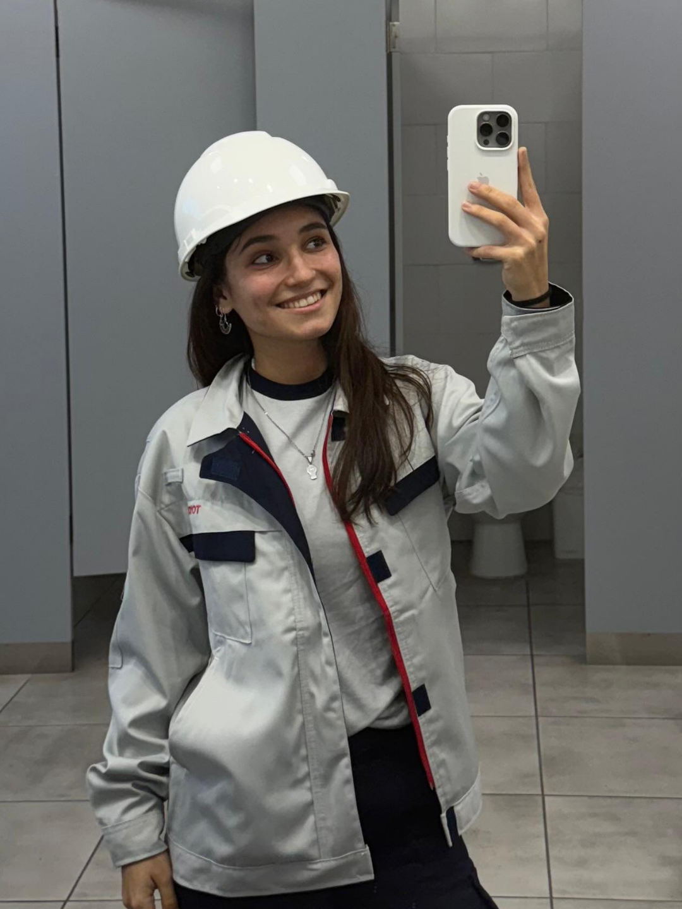
Encontré mujeres que me mostraron que esa posibilidad existía
Florencia cursó una secundaria técnica donde las mujeres eran minoría: de curso de treinta personas apenas cinco o seis mujeres. "Desde el día uno me tuve que enfrentar a una situación en la que no estaba acostumbrada", recuerda. Con el tiempo esa sensación de estar sola creció, sobre todo cuando empezó a interesarse por la tecnología y no encontraba a nadie más en el colegio que compartiera esa curiosidad. "¿Cómo puede ser que esto que a mí me está llamando la atención, que a mí me interesa, no haya nadie más en todo el colegio que esté en la misma que yo?".
Un día le contó esa frustración a un profesor, que le habló de Chicas en Tecnología: un espacio para aprender con mujeres sobre tecnología. Investigó y se anotó en el primer programa que encontró. De ahí fue sumando programas más técnicos, formación con apoyo de inteligencia artificial y, más adelante, el tramo de empleabilidad.
En uno de los talleres, visitó las oficinas de Standard and Poor en Argentina para practicar oratoria, habilidades blandas y armados de CV junto con los equipos profesionales. Allí fue la primera vez que conoció a una mujer en un puesto de liderazgo y lo recuerda como un hito en su recorrido. "Encontré mujeres que me mostraron que esa posibilidad existía, gente que hoy en día está trabajando en tecnología, gente que lideraba grupos y equipos diversos." Eso le abrió una posibilidad que antes no hubiera pensado: “Fue como mi foco, decir bueno, esto es lo que yo quiero hacer. Pude ver en algo tangible que eso que yo tenía, tantas preguntas o tantas incertidumbres, era realmente posible."
Esa visita le quedó marcada. "Me voló el bocho escucharla, la forma de comunicar, súper segura de sí misma, tranquila, muy inspiradora”. Fue el inicio de trabajar su confianza y ponerse metas de cómo quería proyectarse profesionalmente. “Primero animarme a anotarme a más programas, después a programas más técnicos, de a poco fui incorporando los que eran más de programación... fui profesionalizandome y cada uno me llevó a desarrollar distintas habilidades.“ Con el tiempo pasó a acompañar a otras jóvenes en su recorrido, un rol que describe como devolver lo que a ella le dieron.
Actualmente Florencia estudia Ingeniería Industrial, buscando el cruce entre lo industrial y la tecnología como herramienta. A un año de recibirse, lo percibe como "un logro no solo para mí, sino para mis papás, que fueron contención y apoyo tanto tiempo" y destaca ser la primera ingeniera de su familia. En paralelo, trabaja en Toyota, como pasante de ingeniería de producción. En ambos espacios se repitió el patrón: en su facultad, las mujeres son menos del diez por ciento, y en cursos de cuarenta personas a veces son apenas cuatro o cinco. Todos sus profesores de ingeniería son hombres. En la fábrica, junto a la línea de producción, además del ambiente masculinizado se suma el desafío de la edad, con compañeros que tienen más años en la empresa que ella de vida y con frecuencia se refieren a ella como "chiquita" o "nena". "Hay que hacer valer todo el conocimiento que traes, que muchas veces te ponen en duda solo por el hecho de ser mujer o de ser más joven" dice.
Florencia reflexiona sobre su recorrido y las herramientas que desarrolló: “Me siento mucho más segura de mí misma y mucho más capaz, no tanto por las habilidades técnicas, porque esas se van ganando con la experiencia y con el tiempo, sino porque si me propongo algo, sé que con esfuerzo y con trabajo lo puedo cumplir".
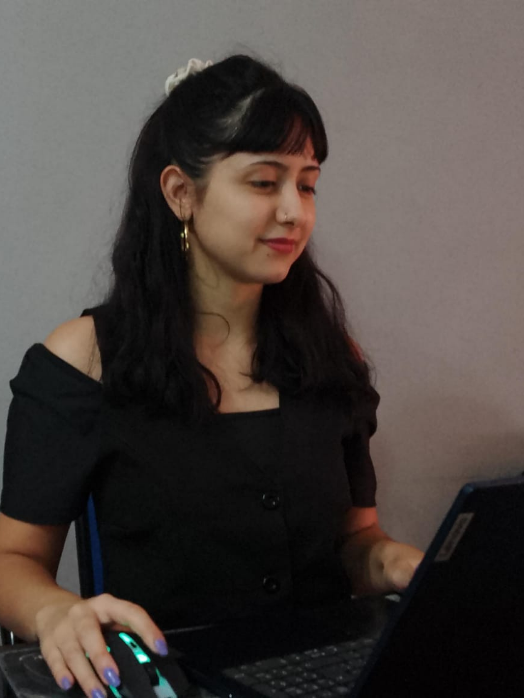
Quería algo distinto, algo que me diera estabilidad
Nayla empezó a trabajar desde muy joven en una panadería de Berazategui, un barrio humilde y trabajador, bajo condiciones que hoy define como “agotadoras”. “Tenía que hacer de todo. Era franquera, me llamaban cuando faltaba alguien y salía corriendo. Pedía hacer doble turno, así me permitía tener más ingresos. Arrancaba a las 7 de la mañana y nos quedábamos hasta las 10 de la noche”, recuerda.
La decisión no fue solo laboral, sino familiar. En un contexto donde el trabajo informal suele ser la opción más accesible, especialmente para mujeres jóvenes sin experiencia previa, aceptar jornadas extensas y sin registro se convirtió en una respuesta a la urgencia para ella y su familia. “En mi casa mi mamá toma changas de cuidados de adultos mayores, además de hacer las tareas del hogar. Mi hermano más grande sigue en búsqueda de una oportunidad laboral”, cuenta.
Durante años, el ingreso principal del hogar fue el sueldo de su padre quien trabajaba como empleado municipal. “Vivíamos los cinco con ese ingreso, pero el año pasado se enfermó y ahí todo cambió”, explica. La necesidad económica se volvió urgente y la panadería apareció como una salida inmediata. “No era lo que soñaba pero había que trabajar. Había que ayudar en casa”.
Nayla sabía que tenía que buscar la oportunidad para cambiar esa trayectoria familiar. “Yo veía lo difícil que era para mi mamá depender de changas. Quería algo distinto, algo que me diera estabilidad”, señala. En ese proceso, conoció la Fundación Empujar. Tras completar la capacitación del programa “Tu Empleo”, Nayla obtuvo una beca de formación para realizar el curso de asistente administrativa en la empresa KPMG. Al poco tiempo, a través del portal de empleos de la fundación accedió a una entrevista en KelSoft, donde consiguió su primer empleo formal.
Ahí entendió que la informalidad laboral no solo afectaba su vida personal sino también sus posibilidades académicas. Con su primer empleo, Nayla pudo reorganizar su rutina y comenzar sus estudios de bioingeniería en la universidad, donde cursa el tercer año.
Actualmente trabaja como analista de e-commerce bajo modalidad home office. La estabilidad laboral le permitió mejorar sus condiciones y contar con cobertura de salud. “Ahora tengo obra social y eso me da seguridad. Me dan el espacio para estudiar, para ir al médico si lo necesitás. Me siento valorada”, cuenta.
Además, su trabajo es bajo modalidad home office, lo que le permite estar cerca de su familia y transformar el tiempo que antes destinaba a traslados en horas de estudio. Esa organización flexible de la jornada resulta clave para sostener su carrera universitaria y acompañar la dinámica de su hogar.
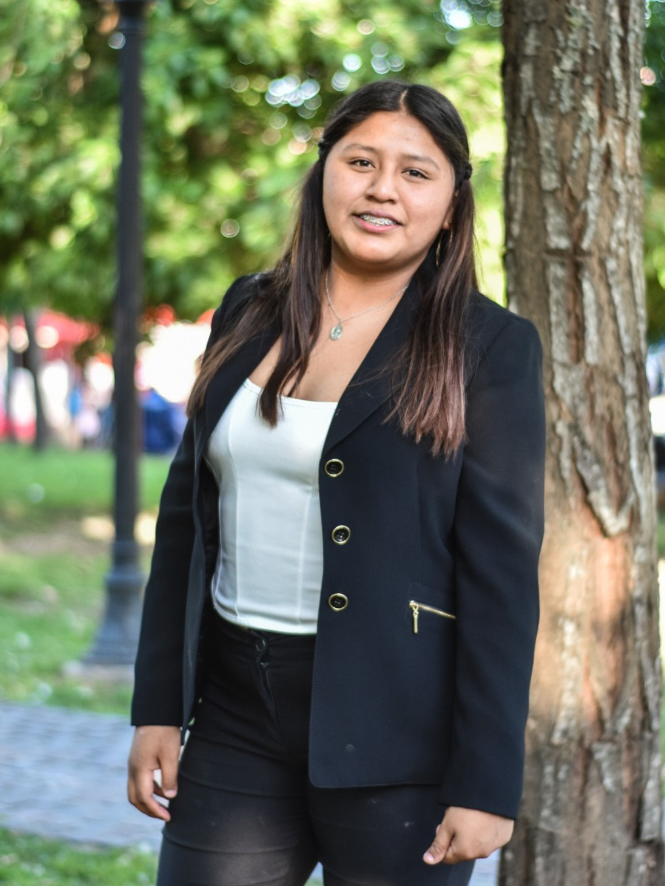
Por primera vez en mi vida me vi como alguien que sí podía liderar un grupo
Romina tenía diez años cuando su papá tuvo su primera computadora. "Me fascinaba mucho el hecho de tener una computadora en la casa. Usaba la notebook de mi papá, la usaba más yo que él". Viendo ese interés y con mucho esfuerzo, su papá logró comprarle una computadora básica como regalo de sus quince años. “Si no estaba en el colegio, estaba jugando con la computadora”. Ahí empezó a formarse de forma autodidacta viendo tutoriales de YouTube sobre diseño gráfico.
En el último año de secundario, el colegio le ofreció la oportunidad de anotarse a un curso en la Fundación Oficios. “estábamos por recibirnos como técnicos de la informática. Nos comentaron que la organización tenía un curso de testing de aplicaciones que podíamos hacer que nos validen las horas como de pasantías para egresar”. Romina ya conocía a la fundación porque su papá había hecho ahí la formación de electricista buscando nuevos horizontes laborales.
Así como tuvo su primera oportunidad para capacitarse en estos temas. Empezó con el curso de testing y luego en uno programación en Python. "Yo pensaba que ser tester era encontrar errores en aplicaciones, pero después aprendimos que en realidad el trabajo de un tester es aportar calidad a los proyectos que se van formando". Aprendió que el testing le cambió también la forma de pensarse a sí misma: "antes me centraba mucho en los errores, más que en seguir creciendo o aportar cosas de valor. Ahora lo único que trato de buscar son posibles soluciones o posibles ideas de mejoría en todos los aspectos". Esa misma seguridad se le nota hoy en cómo habla con otros.
Romina cuenta cómo estas capacitaciones cambiaron su percepción sobre si misma: "antes me gustaba mucho hablar, pero me costaba demasiado. Ahora ya no lo siento tan así. Me animó y me ayudó a ganar confianza". El trabajo en equipo fue una oportunidad también para poner en práctica sus habilidades. "Por primera vez en mi vida me vi como alguien que sí podía liderar un grupo, algo que jamás me había pasado por la cabeza", cuenta. Hasta ese momento, Romina no se veía como alguien capaz de estar al frente de un grupo. "Yo jamás me vi en una postura de líder, como que siento que no es algo que se me dé tan bien. Prefiero más ser parte de los liderazgos, ser de los que siguen”.
Romina cuenta que Fundación Oficios cambió la vida de su familia con la oportunidad de formarse y mostrando nuevos recorridos profesionales. "Mi mamá, mi papá y yo nos formamos en fundación. Creo que las herramientas que nos dio a los tres fue un cambio de visión de cómo se desarrollan los oficios en sí", dice. A su papá, que trabaja de electricista, se sumó su mamá que, con el curso de costura, se animó a lanzar su emprendimiento de peluches y fundas que rápidamente se convirtió en una iniciativa familiar. Romina la ayudaba en el armado de los diseños, los materiales y las sublimaciones.
“Estaba tratando de apuntar a mejorar todo el tema del emprendimiento, cuando se me cruzó el tema de seguir estudiando. Quería estudiar programación”. Así fue como Romina fue la primera en su familia en cursar estudios universitarios de tecnicatura universitaria en programación en la UTN Pacheco, al tiempo que trabaja cuatro horas por día con una beca administrativa en la universidad. Reflexiona sobre su recorrido: "a mí me ayudaron, me gustaría también ayudar a alguien que lo necesite, poder dar oportunidades a todos de que puedan aprender o hacer lo que les gusta".
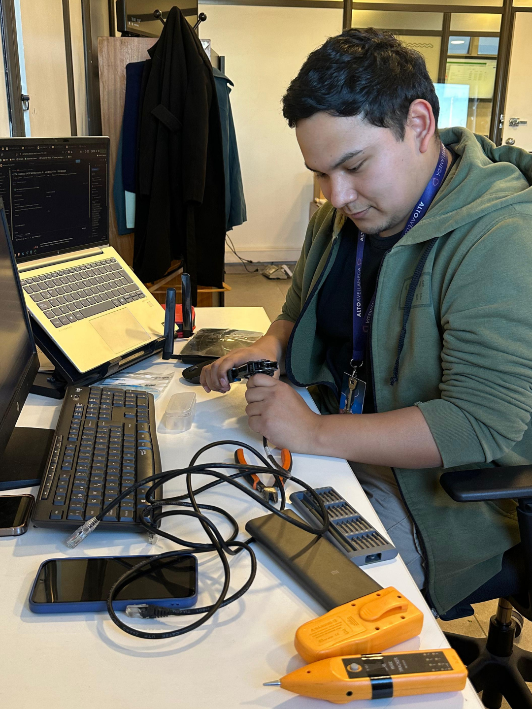
Eso me motivaba a demostrarme que yo era capaz
Hernán cursó la secundaria durante la pandemia. Como muchos adolescentes, sostener los estudios se volvió un desafío. "A mí me golpeó mucho porque yo no encontraba concentración, no podía estudiar. No tenía computadora de por sí, así que me costaba mucho. Tenía que usar el celular, me distraía cualquier cosa y hasta tenía conflictos con mi propia familia dentro de mi casa. Era todo muy complicado. Todos estábamos saturados, todos era difícil. Y ese fue un año donde a mí me fue espantoso y era muy difícil pensar en el futuro en ese momento." recuerda.
Le quedó una materia pendiente por lo que no llegó a terminar el secundario en el tiempo esperado. Ahí fue cuando su hermana le contó sobre Puerta 18 y decidió anotarse. Cuando empezó iba todos los días que podía. Hizo cursos de fotografía, modelado 3D, de creatividad y Programación Frontend. Hernán se dio cuenta que la tecnología le apasionaba. “Hay veces que iba la mañana y me quedaba todo el día avanzando con un trabajo, avanzando con un proyecto. Y los profes me veían, eso me motivaba a demostrarme que yo era capaz, de podía avanzar, que podía seguir por más.”
Al año, recibió una propuesta que no esperaba. Le ofrecieron una beca en un curso de Analista de Datos, con computadora y la formación paga incluidas. “Empecé a tomar ese curso y me encantó”. Su desempeño y ganas de desarrollarse destacaban, lo que le abrió una posibilidad que él consideraba impensada: le ofrecieron sumarse a una pasantía de tres meses para trabajar en IRSA en el equipo de análisis de datos. “Era como justo lo que estoy estudiando. Y encima, algo que me recontragustó, algo que conocí ahí, que después me dieron una pasantía para aprenderlo más a profundidad y encima, ir a una empresa real a trabajar de eso mismo. Yo no lo podía creer en ese momento.” Esa fue su primera experiencia profesional. ”Ahí yo aprendí muchísimas cosas. Me llevé muy bien con el equipo. Aprendí cómo funcionaba el real estate dentro de la empresa y encima logré terminar mi pasantía con un tablero que terminaron usándolo de verdad para trabajar”.
La pasantía ya había terminado cuando recibió una llamada que lo sorprendió: se había abierto una posición y querían ofrecerle un puesto fijo. “Ese día yo me emocioné demasiado. Me parecía increíble porque venía de una época donde en el colegio no me había ido tan bien, porque me tardé en terminarlo, y venía como todo de golpe: la pasantía, la beca, haber terminado el secundario, haberme ido bien en la pasantía y que al poco tiempo me llamen nuevamente”. Recuerda que contestó rápido y con entusiasmo: “Sí, de una”. Al cortar, abrazó a su hermanita y no pudo contener el llanto.
Desde entonces, Hernán trabaja en el área de sistemas como soporte técnico en el Alto Avellaneda. Aunque está atento a seguir construyendo su futuro: “me estoy por anotar para estudiar también, porque yo quiero crecer en la empresa y aunque no sea en esta empresa, si fuera en otra, me encantaría mejorar también mis propias habilidades”. Y destaca que su meta ahora es liderar un equipo algún día. "Me encantaría llegar a tener un equipo a cargo. Yo sé que igual tengo 21 años, pero es un sueño".
El trabajo también transformó su vida familiar. "Vivimos en el Bajo Flores en una zona muy complicada. Que yo haya logrado conseguir este trabajo con este sueldo nos viene re bien, a mí y a mi familia, para poder mejorarnos, hoy nos sentimos más seguros". Sus ingresos ayudan al hogar y cuenta que con su mamá ya están ahorrando para mudarse a un barrio más tranquilo.
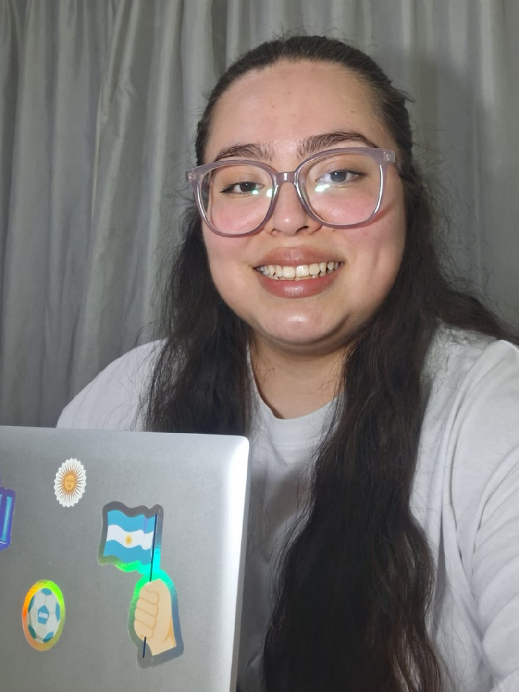
Ahora siento que cambió mi mirada, que voy a poder llegar a trabajar de lo que yo quiera
Morena tenía miedo de no encontrar trabajo. "Antes tenía una mirada de decir, me va a costar mucho encontrar mi primer trabajo," recuerda. No tenía muchas referencias cercanas para saber cómo se hacía ese camino de salir del secundario para adentrarse al mundo laboral. Se recuerda como “una persona tímida, que no tomaba tanto la iniciativa y esperaba que el otro proponga”.
Cuando terminó el secundario, empezó a buscar cómo seguir. Estaba explorando qué cosas le interesaban, cuando en las redes sociales encontró una publicación que convocaba cursos gratuitos en Puerta 18. Decidió anotarse en los que fueron sus primeros cursos de tecnología, primero de experiencia de usuario y después de diseño gráfico. Pero destaca que estar en la organización no solo la motivó desde lo técnico sino desde el sentirse parte: "era un espacio seguro, uno puede ser tal cual es, no hace falta ser alguien distinto".
El primer gran cambio llegó con el trabajo final del curso de diseño gráfico. "Me costaba mucho hacer las presentaciones, siempre me ponía muy nerviosa, me olvidaba de las cosas que tenía que decir". Algo en ese curso cambió en ella: "crecí un montón en el aspecto técnico y sobre todo personal. Desarrollé más mi personalidad, la confianza en mí misma." Recuerda que el trabajo final de ese curso tomó la delantera presentando su propuesta y defendiéndola ante sus compañeros.
Morena había empezado sus estudios universitarios en Comunicación, y en el camino se pasó a marketing y administración. En ese proceso, se anotó con un curso que incluía formación en contabilidad y excel. Ese programa cerraba con una pasantía profesional de tres meses, y a ella le tocó hacerla en PwC.
Morena destaca su recorrido y las oportunidades que tuvo para acceder a esa primera experiencia profesional. “Si bien no contábamos con experiencia previa, sumaba mucho los cursos que hacíamos a la hora de postularnos un trabajo porque adquirimos un montón de habilidades técnicas. Y blandas como el trabajo en equipo, el compromiso, la responsabilidad. O el armado de CV o usar LinkedIn.”
Antes del cierre de esa pasantía, tuvo la posibilidad de sumarse a un nuevo programa de prácticas laborales con un acompañamiento semanal. Desde la organización la alentaron a sumarse "es una oportunidad que te va a servir para el futuro”. Sin embargo, se tomó unos días para pensarlo. Morena era la primera de su familia en llegar a la universidad. "A mí me dieron la posibilidad de estudiar y enfocarme en eso, una oportunidad que mis padres no tuvieron" dice. Hablando con ellos sobre esta oportunidad, la animaron a avanzar con la condición de que no dejara sus estudios.
Desde entonces trabaja en IRSA, como asistente del área de gestión de recursos de terceros. Allí da soporte en la gestión de la publicidad de los shoppings. Está aprendiendo a usar nuevas herramientas y conociendo mejor del negocio. “Antes estaba más enfocada en conseguir un trabajo más relacionado con marketing pero a raíz de esta experiencia y descubrir el área y lo que hace, me gustaría más de ahora en más enfocarme en lo que es análisis de datos”.
Hoy esa mirada que la angustiaba cambió por completo. "Ahora siento que cambió mi mirada, que voy a poder llegar a trabajar de lo que yo quiera". Para describir todo el camino, usa la imagen de una escalera: "me imagino como una escalera, y hoy, mirando para atrás, cuatro años atrás no me hubiese imaginado, ni un mínimo, estar adonde estoy hoy. Todavía no lo veo, porque siento que me falta un montón, pero poder mirar para atrás y decir, guau, todo lo que recorrí y todo lo que hice para estar acá, para mí eso ya es un logro" agrega.
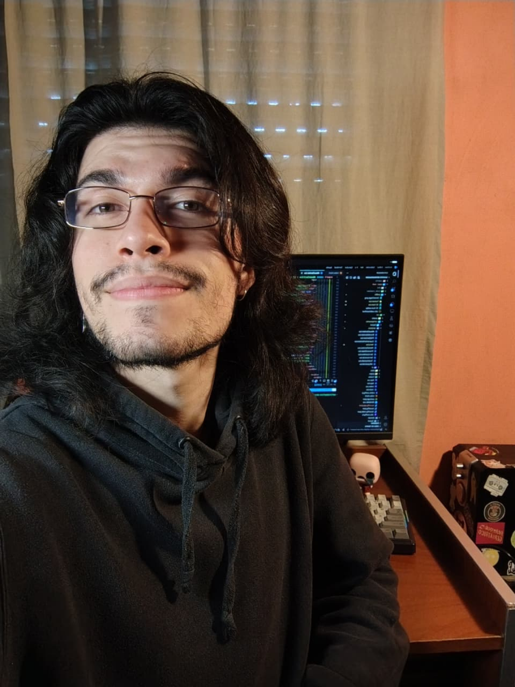
Recorridos que parecían paralelos terminaron combinándose
Matías comenzó sus estudios en la carrera de psicología a finalizar el secundario, al tiempo que trabajaba lejos de su casa armando y repartiendo pedidos. Le demandaba todo el día trasladarse, teniendo que combinar tren y colectivo. "Apenas me quedaba tiempo para estudiar, quedaba re cansado y llegaba re tarde a mi casa". Un día se despertó y reflexionó: "no quiero algo así para mi vida, un laburo que pagaba poco y tener que renegar con el viaje un montón".
Así empezó una búsqueda que le permitiera desarrollarse reduciendo sus horas de viaje: empezó a dar clases particulares, hizo algunos virtuales. En ese proceso, encontró la Fundación Formar para un curso de programación en el turno noche. Matías se puso muy contento cuando lo aceptaron, era una gran oportunidad. “Me acuerdo de que me dije voy a hacer lo mejor posible. Con el tiempo, me di cuenta de que estaba realmente bueno el curso: los contenidos y cómo lo explicaban y todo, te daban también material.”
Tenía clases teóricas y prácticas donde aprendían sobre tecnologías específicas que se usan en las empresas. Además, cursaba un taller de habilidades blandas cada dos semanas. Ahí trabajaba cómo armar el currículum, optimizar el LinkedIn, simulacros de entrevista y comunicación asertiva para trabajar con equipos y jefes. También como se sentía, proyección de metas y acompañamiento al proceso. "Poner en palabras un montón de cosas que a uno le pasan y no las suele decir, o escuchar a un compañero al que le pasa algo parecido y ver que estamos en la misma, esos espacios estaban muy buenos para mí" comparte.
Después de la formación, fue invitado a participar de una pasantía remunerada de tres meses. “Ahí estuve laburando en dos proyectos. Me dio una experiencia real que. No es lo mismo, obviamente, estar haciendo un proyecto, solo para el curso que hacerlo con compañeros y lo que eso implica. También poder trabajar con ellos es algo que está bueno”. El trabajo en equipo excedió el espacio laboral, armando un proyecto de videojuego que lo impulsa por interés en sus tiempos libres.
Un día viendo las redes en el tren, encontró una búsqueda de trabajo que le llamó la atención: era para el desarrollo de un producto de salud mental. “Es difícil conseguir trabajo y más en este contexto. Pero la organización me había ayudado a identificar mis fortalezas y a trabajar las debilidades. Por ejemplo, te ayudan mucho a cómo encarar las entrevistas, cómo te presentas. Da herramientas que apuntan siempre a mejorar la autoconfianza, la autoestima" dice. Después de varias entrevistas, consiguió la posición: “hablé bastante y dije bien las cosas. Estaba nervioso pero sabía qué tenía que hacer, cómo encararlo... y quedaron bastante interesados en mi perfil, que es como una mezcla de psicología y de programación”. Recorridos que parecían paralelos terminaron combinándose y poniéndose en valor en esta oportunidad.
Matías es el mayor de cuatro hermanos, hijo de dos docentes jubilados. "Muchos universitarios no hay en mi familia, soy como el primero que transita un camino así. Es como un montón" dice. Hoy trabaja en la startup y se imagina un futuro sin tener que renegar: "me imagino tranquilo, laburando de programador, con más conocimiento, y bueno, obviamente cobrando mejor también, pero no quiero renegar, quiero tener un buen ambiente laboral".
Acompaña a jóvenes de 16 a 24 años en situación de vulnerabilidad socioeconómica a finalizar sus estudios secundarios, ampliar sus oportunidades de empleo y promover el cuidado del medio ambiente. En 24 años, más de 13.000 jóvenes participaron de sus programas.
Acompañamiento personalizado a estudiantes de los últimos dos años del secundario, en 38 escuelas de 22 localidades del AMBA.
Inserción laboral, becas para estudios superiores y cursos de formación profesional a través de su comunidad de egresados.
Reciclado, recolección de aceite vegetal usado, invernadero hidropónico y huerta. Lo recaudado financia el fondo de becas.
Jóvenes de 15 a 24 años en situación de vulnerabilidad socioeconómica.
21 localidades del AMBA, con programas virtuales y presenciales. Entre otras: CABA, La Plata, Pilar, San Fernando, San Martín, Morón, Merlo, Zárate.
Organización sin fines de lucro que trabaja para reducir la brecha de género en tecnología en Argentina y América Latina. Acompaña a jóvenes de 13 a 23 años en un recorrido progresivo: acercarlas al mundo STEM, fortalecer sus habilidades técnicas, socioemocionales y de liderazgo, y conectarlas con oportunidades académicas, profesionales y de participación pública.
Charlas, eventos, webinars, experiencias introductorias y encuentros con referentes que despiertan curiosidad y desafían estereotipos. Cerca del 90% manifiesta interés en seguir explorando trayectorias STEM.
Laboratorios, clubes, mentorías y proyectos colaborativos. La Comunidad CET reúne a más de 8.000 jóvenes y 150 embajadoras.
Programas de empleabilidad, emprendedurismo, becas, formación técnica avanzada y espacios de participación pública.
Jóvenes de 13 a 23 años que se identifican con el género femenino, en toda su diversidad, con prioridad en territorios con menor acceso a oportunidades STEM.
Presencial en Buenos Aires, Córdoba y Santa Fe. De forma virtual, en toda Argentina y en países de América Latina, con foco en México, Colombia, Chile, Uruguay y Perú.
Desde 2011 promueve la autonomía económica de personas en situación de vulnerabilidad mediante programas gratuitos de formación, empleabilidad e inclusión laboral, con un enfoque centrado en la dignidad, la igualdad de oportunidades y la generación sostenible de ingresos.
Programas que construyen puentes entre el talento y las oportunidades de empleo, en articulación con empresas, organismos públicos y organizaciones sociales.
Formación en oficios y competencias para el empleo de jóvenes y personas adultas, y promoción de su participación en ocupaciones tradicionalmente masculinizadas.
Desarrollo de habilidades socioemocionales, orientación ocupacional y acompañamiento para el acceso al trabajo y a medios de vida sostenibles.
Personas en situación de vulnerabilidad socioeconómica con barreras para acceder al empleo formal, con foco en mujeres y jóvenes en transición al empleo.
Alcance nacional. Las actividades presenciales se concentran en CABA y AMBA, en articulación con gobiernos locales, organizaciones sociales, instituciones educativas y empresas. Las capacitaciones y talleres virtuales llegan a distintas provincias.
Enseñá por Argentina es una organización sin fines de lucro que impulsa la transformación del sistema educativo a través del liderazgo.
Desde hace más de 15 años, formamos y acompañamos a personas que eligen enseñar en contextos desafiantes, y que, al hacerlo, se convierten en agentes de cambio. Lo que comienza en el aula junto a estudiantes, se proyecta en las comunidades, en políticas públicas y en soluciones colectivas.
Convoca y forma a Profesionales de Enseñá por Argentina (PExAs) y Alumni, jóvenes universitarios con compromiso social que lideran procesos de cambio en las aulas y en la comunidad.
Fortalece a docentes y directivos del sistema público con herramientas de innovación pedagógica, alfabetización digital y metodologías activas.
Alcanza de forma indirecta a la comunidad educativa en su conjunto, articulando con familias y redes locales para dinamizar el desarrollo sociocomunitario de cada territorio.
Profesionales de 22 a 40 años que lideran procesos de cambio en el aula, docentes y directivos de 25 a 65 años del sistema público en contextos de vulnerabilidad, y estudiantes de 6 a 18 años de comunidades prioritarias junto a sus familias y redes locales.
Modalidades mixtas, virtuales y presenciales. Buenos Aires, Jujuy, Salta, Tucumán, Catamarca, Chaco, Santa Fe, Mendoza, Córdoba, Neuquén y Río Negro.
Abre puertas donde otros ven barreras. Trabaja en la inclusión sociolaboral de personas en situación de vulnerabilidad, conectando actores, conocimientos y recursos, con estrategias de abordaje territorial adaptadas a cada barrio y comunidad.
Acompaña a personas con un oficio o un emprendimiento en distintos barrios del conurbano: curaduría de productos, formalización (monotributo, bancarización) y oportunidades de comercialización con clientes que creen en el consumo responsable.
Promueve la inserción laboral en el sector IT mediante un ecosistema que combina formación técnica, desarrollo de habilidades blandas y experiencia profesional en su fábrica de software.
Emprendimientos: sin limitaciones de edad ni género. Academia ForIT: todas las edades y géneros. Software Factory: jóvenes de 18 a 24 años, sin limitaciones de género.
Emprendimientos: foco principal en Bernal Oeste, también en Lanús y Pilar. Academia ForIT: virtual, abierta a participantes de todo el país. Software Factory: jóvenes que vivan en la provincia de Buenos Aires.
Espacio gratuito de arte y tecnología para jóvenes de 13 a 24 años. Brinda un sistema de educación no formal, tecnológica, gratuita y abierta, centrado en los intereses de cada joven.
Diseño gráfico, programación, robótica, videojuegos, fotografía, producción audiovisual y modelado 3D.
Fortalece las trayectorias formativas y la vinculación con el mundo del trabajo y la formación superior.
Con organizaciones, empresas y el sector público, ampliando oportunidades y construyendo redes de impacto colectivo.
Desarrollo socioemocional que promueve la autonomía, el pensamiento crítico, la creatividad y el trabajo en equipo.
Adolescentes y jóvenes de 13 a 24 años en contextos de vulnerabilidad social y económica, sin distinción de género.
Presencial en la sede de Zelaya 3118, CABA, con jóvenes de distintos municipios del Gran Buenos Aires. El alcance se amplía al resto del país a través de becas de formación en alianza con instituciones educativas, articulaciones con organizaciones y empresas, y contenidos digitales.
Con más de 20 años de experiencia, diseña programas integrales que mejoran el encuentro entre la formación en oficios y las demandas del mundo del trabajo, con una mirada integral de cara a las demandas sociales y del mercado.
Con aval provincial de Buenos Aires, lo que le permite administrar fondos públicos y participar de las mesas donde se discute la política educativa de adultos.
Además de la sede de Benavídez, articula con empresas, municipios e instituciones para acercar formación a más de 10 puntos del país.
La intención de transferir su experiencia y metodología a otras instituciones que quieran replicarla.
Mujeres y hombres con ganas de progresar a través de la formación continua, para acceder a mejores empleos e ingresos más estables.
Conurbano norte, con sede en Benavídez, y Barrio 31 (CABA). Ha realizado capacitaciones en más de 15 puntos distintos del país.
Organización sin fines de lucro con ADN empresarial, nacida por iniciativa de un grupo de empresarios que decidieron generar una red comprometida con el ingreso de jóvenes de entornos vulnerables al universo del trabajo formal.
Acompaña a jóvenes de entornos vulnerables en su camino hacia el primer trabajo formal, con formación gratuita y herramientas concretas.
Empresarios, PYMES y grandes empresas, personas voluntarias y un equipo profesional que articula con escuelas, cámaras y otras organizaciones sociales.
Procesos y sistemas auditados, y una gestión transparente reconocida legalmente en Argentina.
Jóvenes de 18 a 24 años en los programas de empleabilidad, y de 18 a 30 años en oficios y emprendimientos.
CABA y AMBA, Rosario, Córdoba, Mendoza, San Juan y Neuquén.
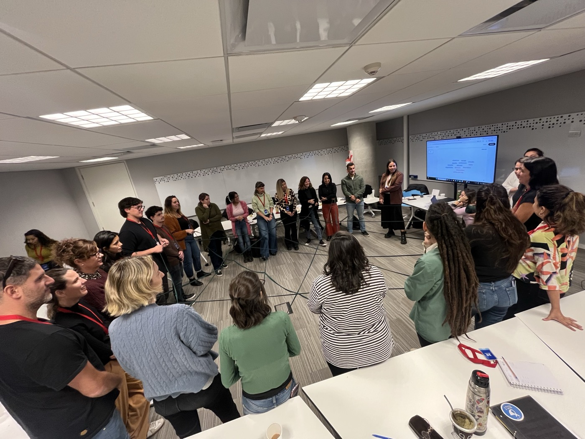
Espacio de aprendizaje, intercambio y colaboración que reúne a organizaciones socias de EMpower en Argentina con el objetivo de fortalecer sus capacidades, compartir experiencias y promover la construcción colectiva de conocimientos.
Ocho organizaciones argentinas que trabajan con jóvenes en educación, salud y bienestar económico, y que sostienen la Comunidad de Práctica encuentro a encuentro.
Cada encuentro es una oportunidad para construir conocimiento colectivo, fortalecer capacidades organizacionales y tejer vínculos entre quienes trabajan cada día para transformar la vida de jóvenes en Argentina.
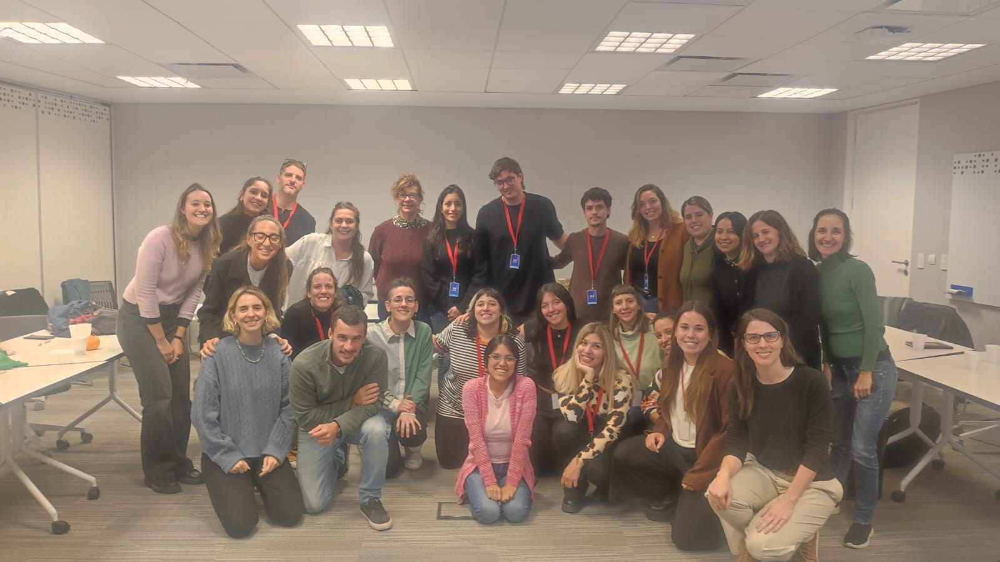
Estamos definiendo el calendario del próximo ciclo. Te avisamos por mail en cuanto esté disponible.
Presentaciones, guías y registros de cada encuentro, organizados por tema y disponibles para los equipos de las organizaciones socias.
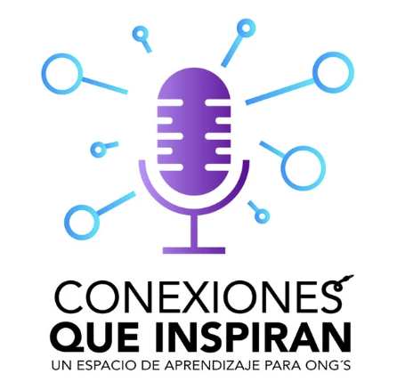
Más de 50 organizaciones sociales de América Latina compartimos buenas prácticas, aprendizajes y desafíos en nuestro trabajo con jóvenes en salud, educación y empleabilidad. Aquí conectamos experiencias reales que inspiran y fortalecen el impacto de quienes transforman realidades desde lo social.
Escuchar en Spotify →Jóvenes que pasaron por los programas de las organizaciones socias, en primera persona.
Animarse a preguntar puede abrir oportunidades
Construir un proyecto de vida a medida
Comunidades que sostienen las trayectorias
De necesitar una referente a convertirse en una
La formalidad laboral para la estabilidad
Salir de la zona de confort profesional
Siempre se puede aprender lo que hace falta
Valorar el recorrido para llegar al primer empleo
Dos mundos que terminaron por encontrarse